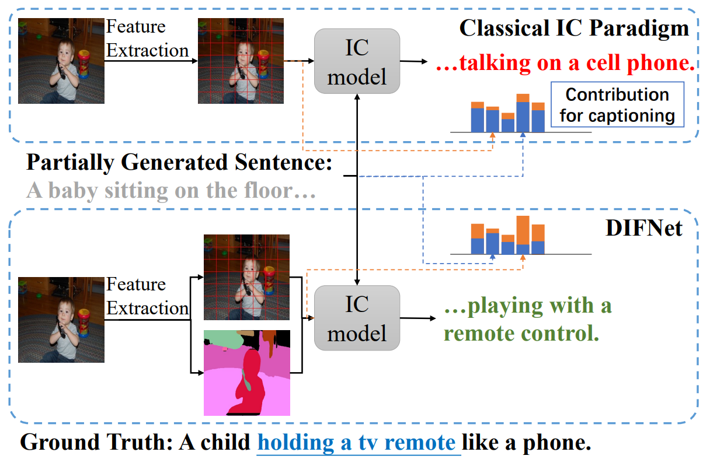
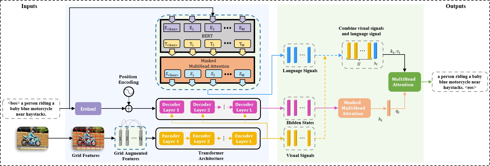
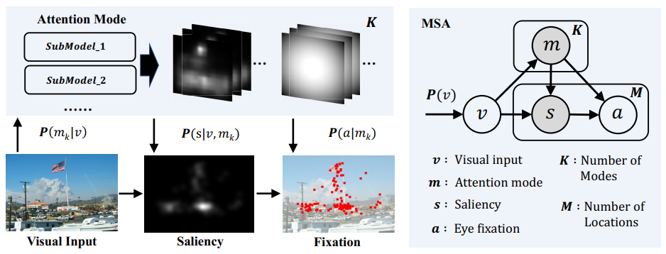
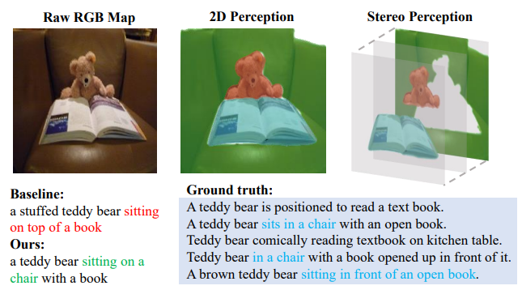

M.Sc. Candidate in Xiamen University
|
I am currently a final-year postgraduate student in Xiamen University and a member of MAC Lab supervised by Prof. Xiaoshuai Sun and Prof. Rongrong Ji. The outline of my experience is as follows:
My current research interests include deep learning, computer vision and pattern recognition, multimedia content analysis and retrieval. More recently, I focus on multimodal learning, especially on vision and language.
|  | Mingrui Wu, Xuying Zhang (co-first author), Xiaoshuai Sun✉, Yiyi Zhou, Chao chen, Jiaxin Gu, Xing Sun, Rongrong Ji
DIFNet: Boosting Visual Information Flow for Image Captioning IEEE/CVF Conference on Computer Vision and Pattern Recognition (CVPR), 2022, CCF-A [paper coming] [code] |
|  | Xuying Zhang, Xiaoshuai Sun✉, Yunpeng Luo, Jiayi Ji, Yiyi Zhou, Yongjian Wu, Feiyue Huang, Rongrong Ji
RSTNet: Captioning with Adaptive Attention on Visual and Non-Visual Words IEEE/CVF Conference on Computer Vision and Pattern Recognition (CVPR), 2021, CCF-A [paper] [code] |
|  | Xiaoshuai Sun, Xuying Zhang, Liujuan Cao, Yongjian Wu, Feiyue Huang, Rongrong Ji
Exploring Language Prior for Mode-Sensitive Visual Attention Modeling Proceedings of the 28th ACM International Conference on Multimedia (ACM MM 2020), CCF-A [paper] [code] |
|  | Mingrui Wu, Xuying Zhang, Xiaoshuai Sun✉, Rongrong Ji, et al.
DATNet: Depth-Aware Transformer for Image Captioning [paper coming] [code coming] |